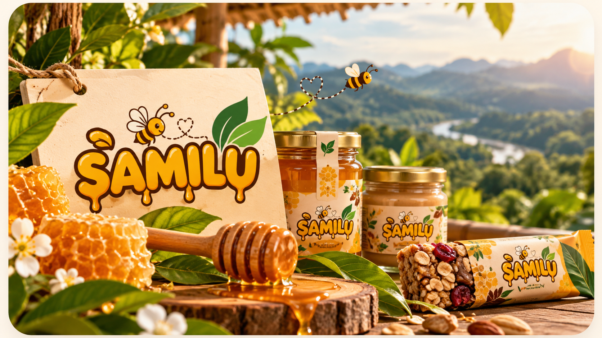
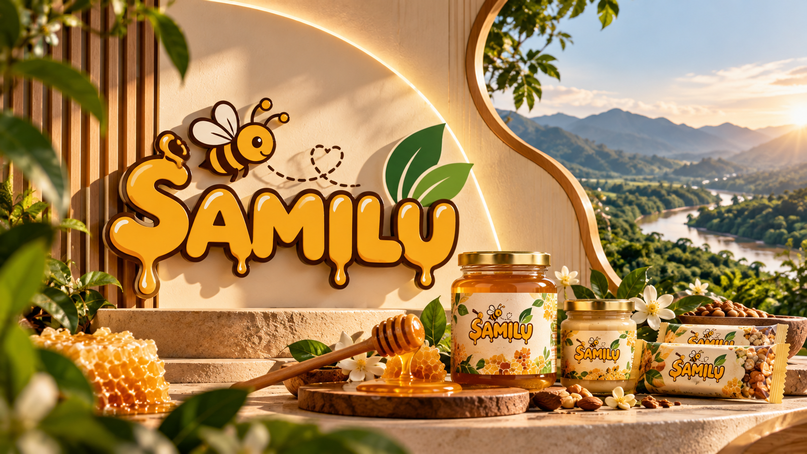
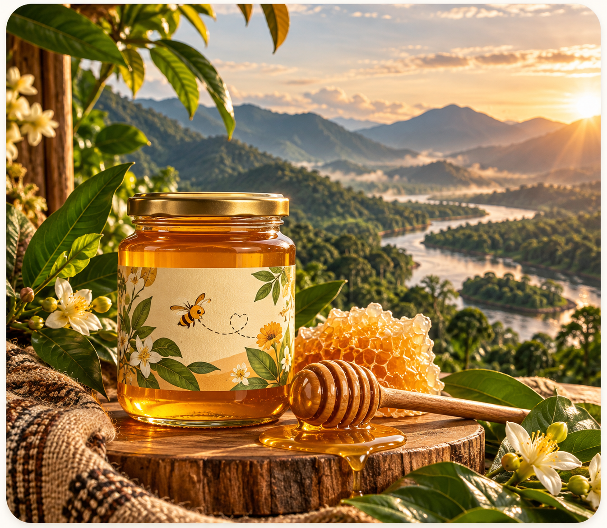
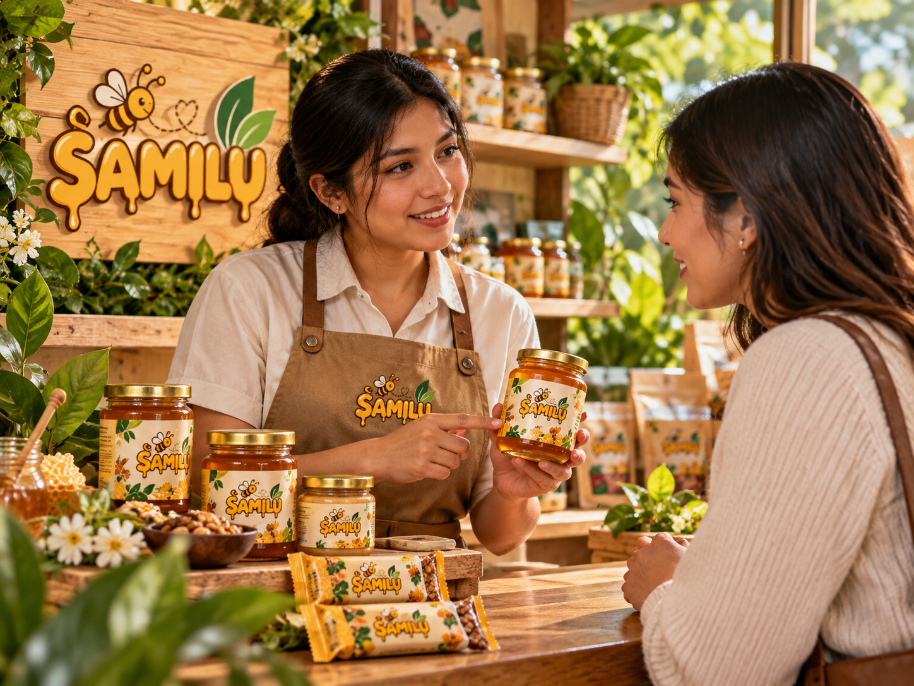

Nombre
SAMILU constituye el elemento verbal principal y permite identificar directamente a la marca.

La identidad corporativa de SAMILU conecta la miel, la naturaleza y la Selva Central con una personalidad moderna, cercana e innovadora.
Explorar identidad ↓

La imagen corporativa reúne la percepción que una marca construye en sus diferentes puntos de contacto. En SAMILU, esta imagen busca transmitir una empresa confiable, cercana, moderna, innovadora y responsable.
La identidad se relaciona directamente con los productos derivados de la miel y con el origen natural de la Selva Central, utilizando una presentación visual llamativa y amigable.
Calidad, sabor, naturaleza, innovación y la esencia de la Selva Central.
SAMILU combina elementos visuales, verbales y conceptuales para construir una identidad clara, reconocible y coherente.

SAMILU constituye el elemento verbal principal y permite identificar directamente a la marca.
La abeja, la miel, las gotas y las hojas ayudan a comunicar naturaleza y actividad apícola.
Dorado, naranja, marrón y verde construyen una personalidad cálida, natural y atractiva.
Copyduck aporta una apariencia amigable, expresiva y diferenciada al nombre SAMILU.
La identidad de SAMILU se construye desde lo visual, lo cultural, lo verbal y lo corporativo.

01SAMILU utiliza un Imagotipo relacionado con la miel y la naturaleza. Sus elementos gráficos ayudan a relacionar la marca con la actividad apícola y con el origen natural de la empresa.
SAMILU representa la identidad de la Selva Central mediante una conexión constante con la naturaleza y la producción de miel.
Esta relación puede reforzarse mediante fotografías, paisajes y recursos gráficos propios de la región, manteniendo siempre la apariencia moderna de la marca.

La comunicación de SAMILU debe mantener un estilo cercano, amigable y sencillo, generando confianza y haciendo que el cliente se sienta cómodo.
El lenguaje debe explicar de manera clara los productos, sus características y su relación con la miel y la Selva Central.

Ejemplo de comunicación de SAMILU.
img/identidad-verbal/cercana.jpgSAMILU habla como una marca que acompaña a sus clientes y crea una relación próxima con el público.
La identidad corporativa concentra la esencia de SAMILU como empresa, desde su propósito hasta la manera en que desea proyectarse.
Ofrecer productos derivados de la miel de calidad, con sabores innovadores y una presentación atractiva, resaltando el origen de la Selva Central.
Ser reconocida como una marca moderna e innovadora de productos derivados de la miel de la Selva Central, destacando por su calidad y presentación y consolidando su presencia en el mercado durante el periodo 2026–2031.
Selecciona una característica para conocer cómo se representa en la identidad de nuestra marca.

SAMILU busca proyectar una imagen actual, ordenada y profesional. Su personalidad moderna se refleja en el diseño de la marca, la presentación visual y el cuidado de cada detalle.